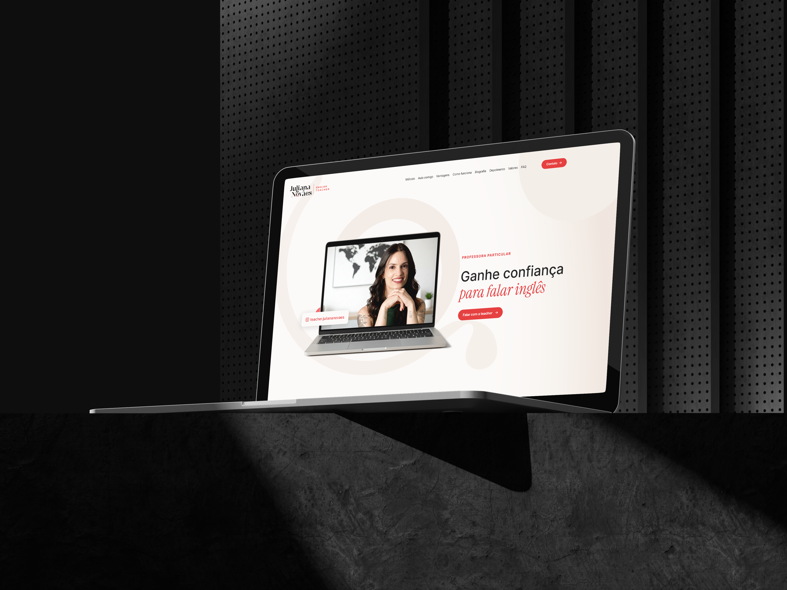
Professora
particular de inglês
O projeto concentrou-se no reposicionamento estratégico da marca, utilizando o Rebranding para elevar a percepção de autoridade da docente. Complementamos a estratégia com o desenvolvimento de uma Landing Page focada em expansão de alcance e conversão de novos alunos.
A jornada deste projeto seguiu o fluxo do Double Diamond. Na fase de imersão, busquei entender as dores dos alunos e o cenário competitivo. Com esses insights, definimos o caminho para o rebranding e a criação de conteúdo, materializando toda a estratégia em uma landing page funcional e otimizada para o público-alvo.
Briefing
Survey
Benchmarking
Rebranding
Conteúdo
Landing Page
Briefing
Survey
Benchmarking
Rebranding
Conteúdo
Landing Page
O projeto iniciou-se com uma imersão profunda no ecossistema da marca. Realizamos um briefing detalhado com a docente e um benchmarking competitivo, analisando desde grandes players do ensino de inglês até profissionais independentes. Para validar as hipóteses, aplicamos uma survey quantitativa com os alunos, mapeando dores latentes e aspirações. Esse diagnóstico foi crucial para a priorização dos problemas e a definição dos objetivos centrais da estratégia.
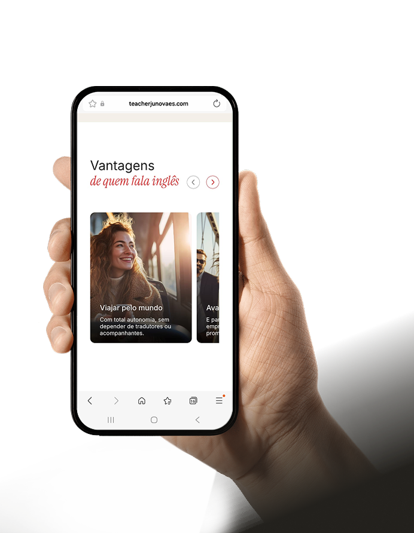
A análise dos dados coletados permitiu o mapeamento do perfil demográfico e socioeconômico dos alunos, além da identificação de seus gatilhos emocionais e aspirações. Esses insights consolidaram a construção da persona detalhada a seguir:
Deseja usar o inglês principalmente em viagens internacionais, além de buscar segurança e confiança para se comunicar em outros países. Seus interesses incluem turismo, culinária e conhecer novas culturas
Motivações:
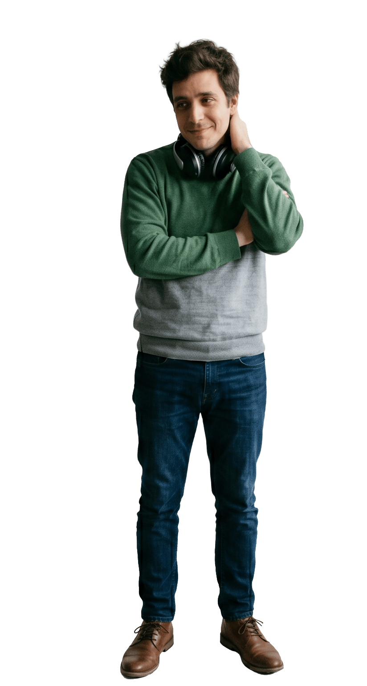
Sente medo ou insegurança ao falar inglês, pois teve experiências anteriores desmotivadoras. Questiona se ainda é possível aprender o idioma. É forte na compreensão, mas recua quando precisa falar.
Motivações:
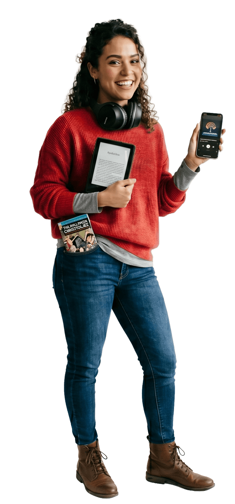
Interesse em filmes, séries, música e literatura em inglês. Vê o aprendizado como forma de apreciar melhor conteúdos culturais, pois já consome mídia em inglês, mesmo sem compreensão total. Valoriza aspectos culturais do idioma.
Motivações:
Após criação das personas, reformulamos identidade da marca, incluindo logotipo, identidade visual e posicionamento, procurando mudar como ela é percebida pelo público.
Manteve-se a ideia original da viagem, levando em conta que o principal público alvo da professora estuda inglês para ter independência em viagens internacionais. Porém, sua font ficou mais orgânica e clean, deixando-a mais elegante, e junto com suas cores preto e vermelho, torna-se uma combinação que transmite poder, sofisticação, intensidade e autoridade. O vermelho traz vitalidade, paixão e urgência, enquanto o preto adiciona elegância, seriedade e mistério.
Tipografia e cores
Inter
Instrument Serif
ABCDEFGHIJKLMNOPQRSTUVWXYZ
abcdefghijklmnopqrstuvwxyz
0123456789
#1F1F1F
#353535
#E43636
#FAF6F2
#F5EFEA
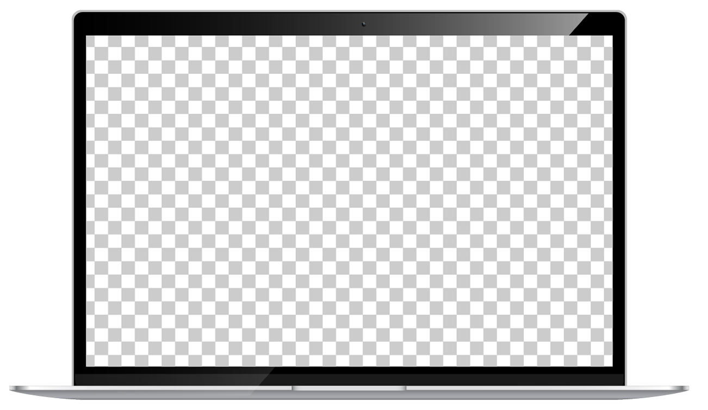
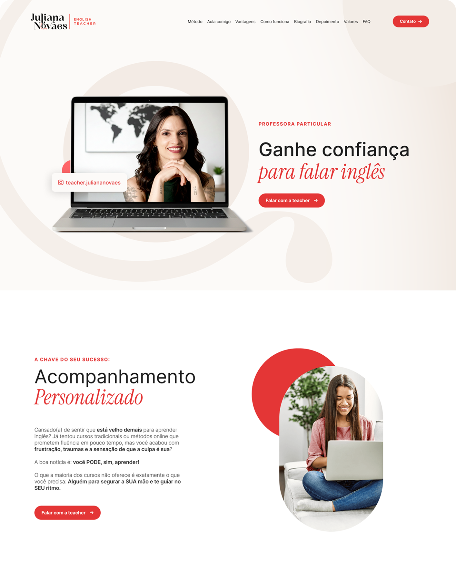
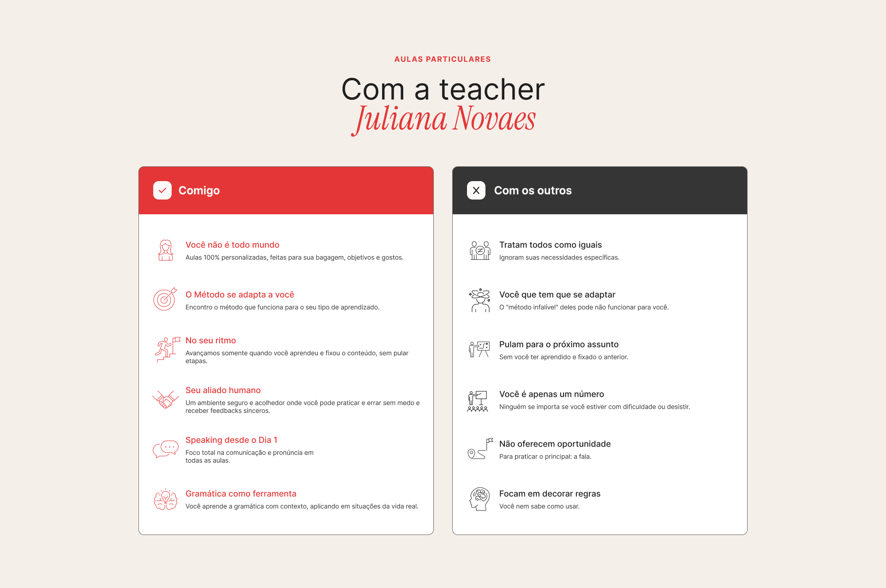
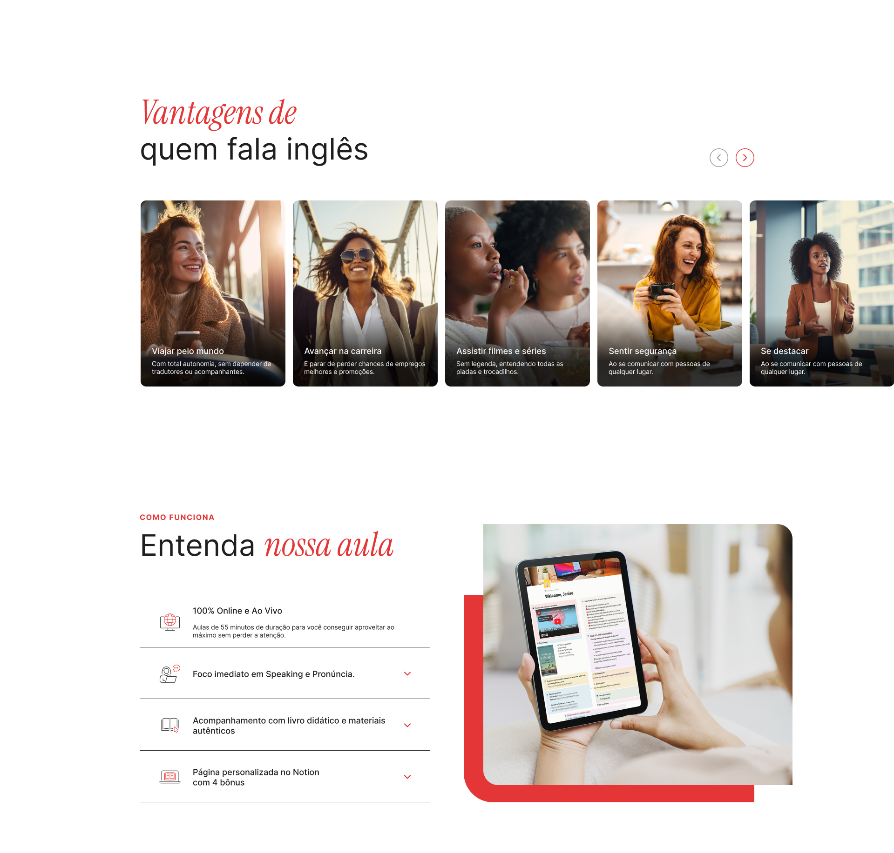
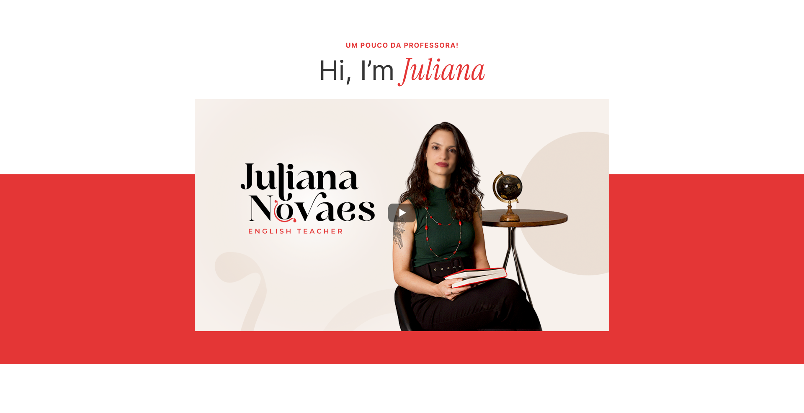
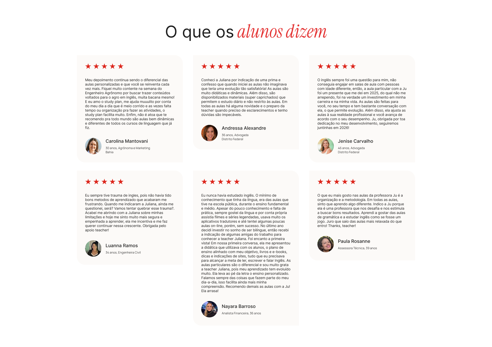
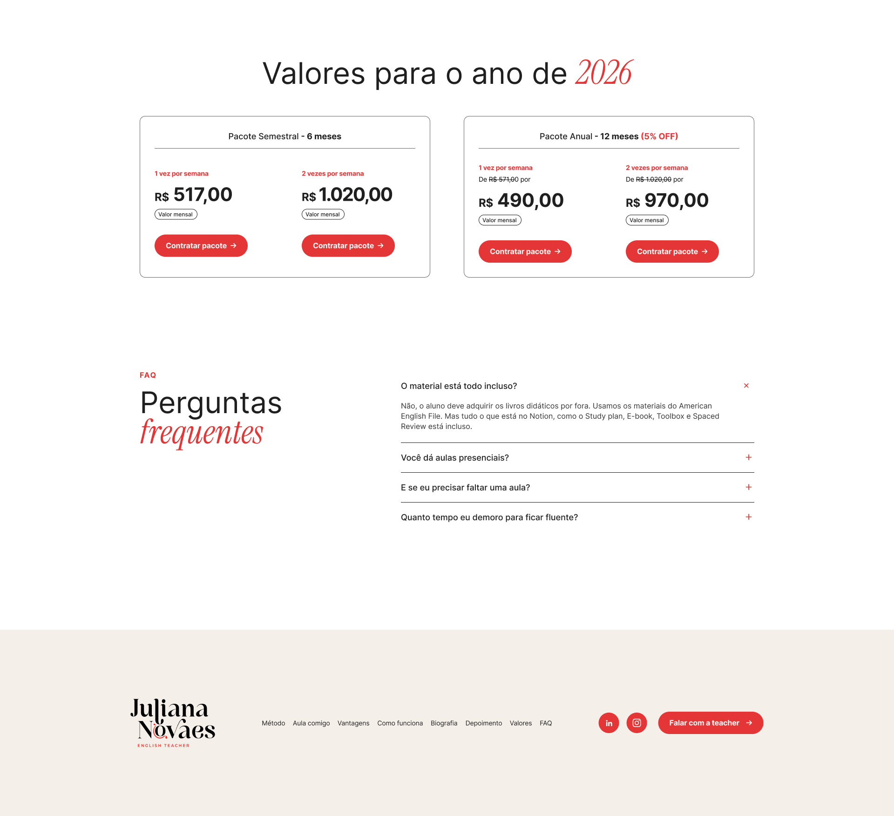
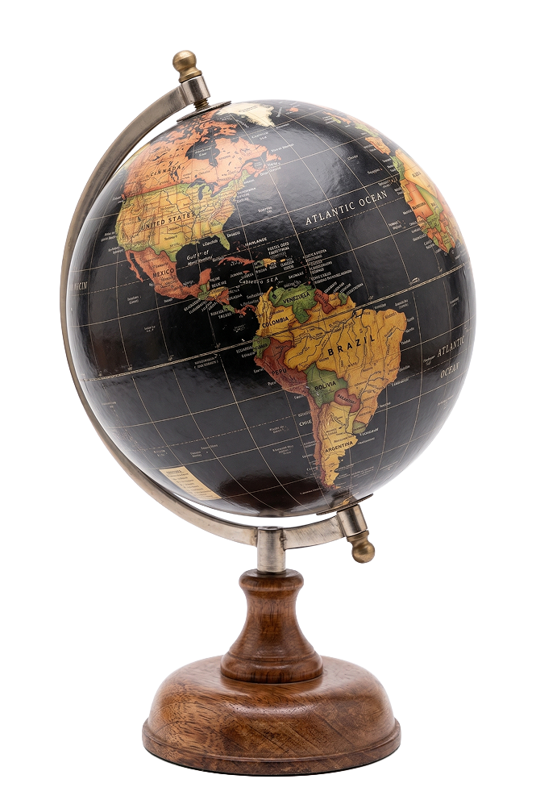
Obrigado!